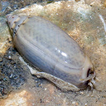
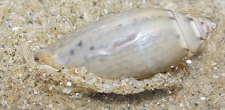

|
|
| shelled snails text index | photo index |
| Phylum Mollusca > Class Gastropoda > Family Olividae |
| Common
olive snail Oliva oliva* Family Olividae updated Sep 2020 Where seen? This small bullet-shaped snail is actually not very commonly seen, only on a few of our shores so far. A burrowing snail, it is more often seen above the ground at night or with the incoming tide. Features: 3-4cm. Shell thick heavy glossy, cylindrical bullet-shaped with tall conical spire. White lip ends at less than half of the shell opening length. Shell pattern and colour varies. The shell opening pinkish. Body large beige with brownish spots all over. A long siphon sticks out of the notch in the shell. It does not have an operculum. |
 Pulau Semakau, Aug 11 |
 Tall conical spire. |
 White lip ends at less White lip ends at lessthan half the shell opening length. Shell opening pinkish. |
*Species are difficult to positively identify without close examination.
On this website, they are grouped by external features for convenience of display.
| Common olive snails on Singapore shores |
On wildsingapore
flickr
|
| Other sightings on Singapore shores |
 Changi, Apr 13 Photo shared by Marcus Ng on flickr. |
 Changi, Apr 10 Photo shared byJames Koh on flickr. |
| |
Links
References
|